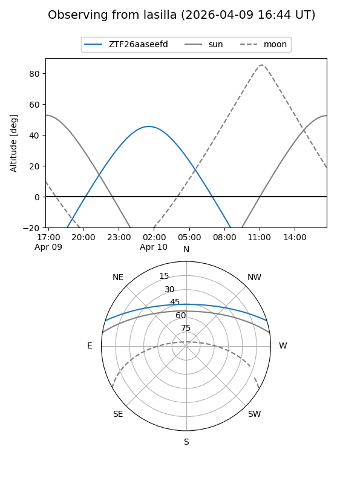
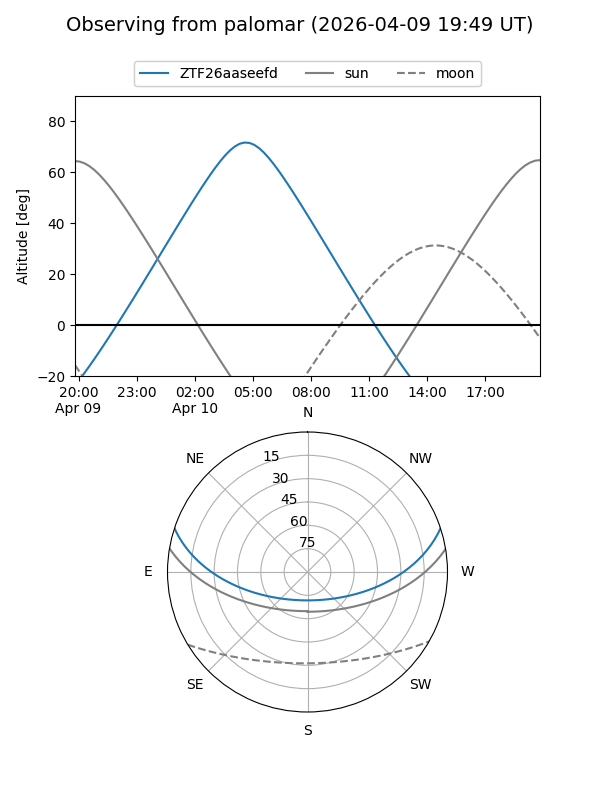

ZTF26aaseefd
Target ZTF26aaseefd at 2026-04-10 05:50
Aliases and brokers:
FINK: link
Lasair: link
ALeRCE: link
alt names
ZTF26aaseefd (ztf,fink_ztf)
Coordinates:
equatorial (ra, dec) = 150.7323,+15.22905
equatorial (HMS+DMS) = 10:02:55.76,+15:13:44.58
galactic (l, b) = (221.0679,+49.17106)
Flags:
Photometry:
last ztfg=19.40
1 ztfg detections
Lightcurve
Visibility


Additional plots